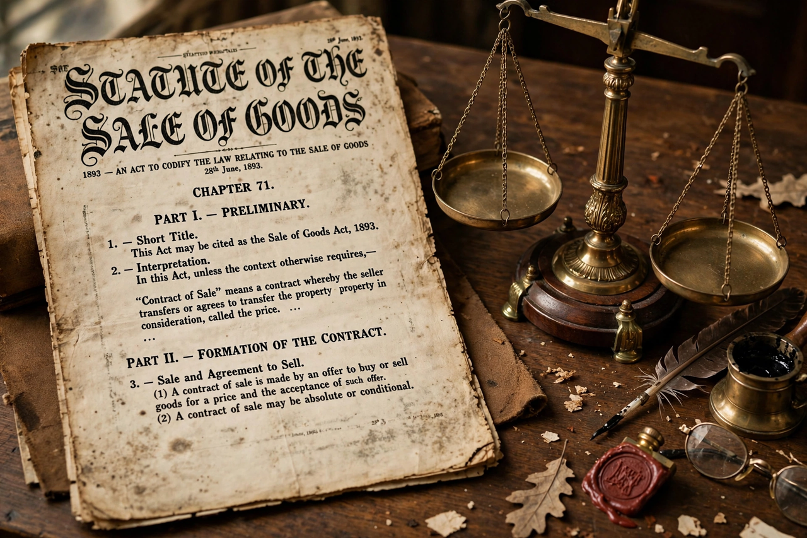

| Sale of Goods Act 1979 | |
| Long title | An Act to consolidate the law relating to the sale of goods. |
|---|---|
| Citation | 1979 c. 54 |
| Territorial extent | United Kingdom |
| Royal assent | 6 December 1979 |
| Commencement | 1 January 1980 |
| Repeals | Sale of Goods Act 1893 |
| Status | Amended |

The Sale of Goods Act 1979 (c. 54) is an Act of the Parliament of the United Kingdom which regulates contracts in which goods are sold and bought. It is the successor to the Sale of Goods Act 1893, which first codified the common law rules on the sale of goods, and it remains the principal statute governing business-to-business sale of goods contracts in the United Kingdom.
The law of sale of goods was first codified by the Sale of Goods Act 1893, drafted by Sir Mackenzie Chalmers. The 1979 Act is a consolidation measure: it restated the 1893 Act and its amendments, including the Sale of Goods (Amendment) Act and parts of the Supply of Goods (Implied Terms) Act 1973, rather than substantially reforming the law.
The Act implies a number of terms into contracts for the sale of goods:
Since 1 October 2015, most consumer rights in goods contracts are governed by the Consumer Rights Act 2015, so the 1979 Act now applies principally to contracts between businesses, and to private sales between individuals. Its terms as to quality and description therefore remain important in commercial law, including commercial sales under the umbrella of English contract law.